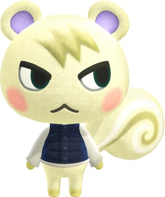

Some Villagers
Marshal
Marshal is a smug squirrel villager in the Animal Crossing series. He first appeared in Animal Crossing: New Leaf and has appeared in all subsequent games. He is the only smug squirrel in the series. His name may be derived from "marshmallow," referring to his fur color. His catchphrase, "sulky," may bear some resemblance to his appearance. In New Horizons, Marshal has the music hobby and may sing anywhere without the need of a stereo.
Fang
Fang is a cranky wolf villager in the Animal Crossing series who appears in all games to date except Animal Crossing: Wild World. His name may come from the fang, a tooth found in carnivores. His Japanese name comes from Siberia, a region in northern Asia that is mostly an arctic environment. In New Horizons, Fang has the education hobby and can be seen wearing rimmed glasses, reading a novel while outside, and using a magnifying glass when near certain objects.
Fauna
Fauna is a normal deer villager in the Animal Crossing series. She first appeared in Animal Crossing: New Leaf, and she was one of the first villagers announced for the release of the game. She has appeared in all subsequent games. Her name comes from fauna, meaning the animal life of a specific region, though it may also be a pun on fawn, a young deer. In New Horizons, Fauna has the nature hobby and may be found reading a book pertaining to an item she is studying, which can be either flowers, bugs, fish, or fossils.
Blanche
Blanche is a snooty ostrich villager in the Animal Crossing series. She first appeared in Animal Crossing: New Leaf and has appeared in all subsequent games. Her name is the French word for white, referring to her feather color. In New Horizons, Blanche has the nature hobby and may be found reading a book pertaining to an item she is studying, which can be either flowers, bugs, fish, or fossils.
A clip of New Year Celebration
: 0 100%